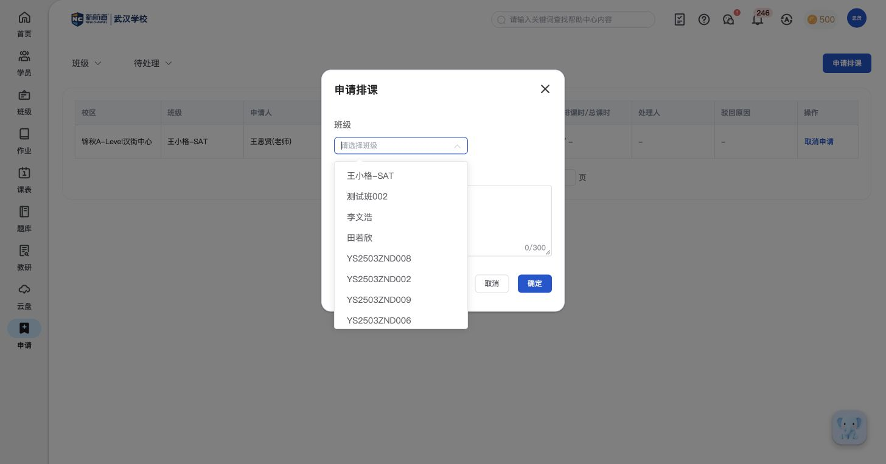
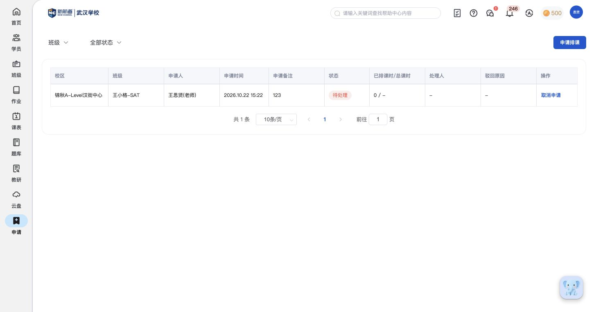
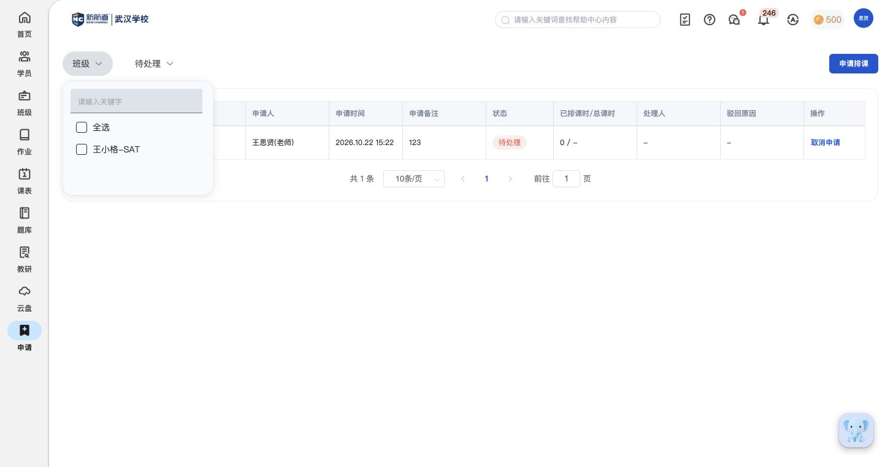
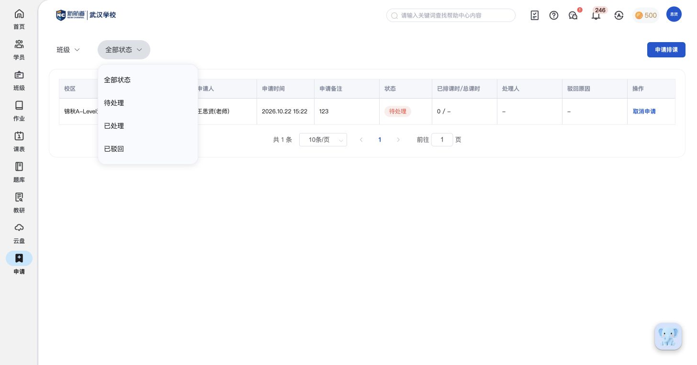
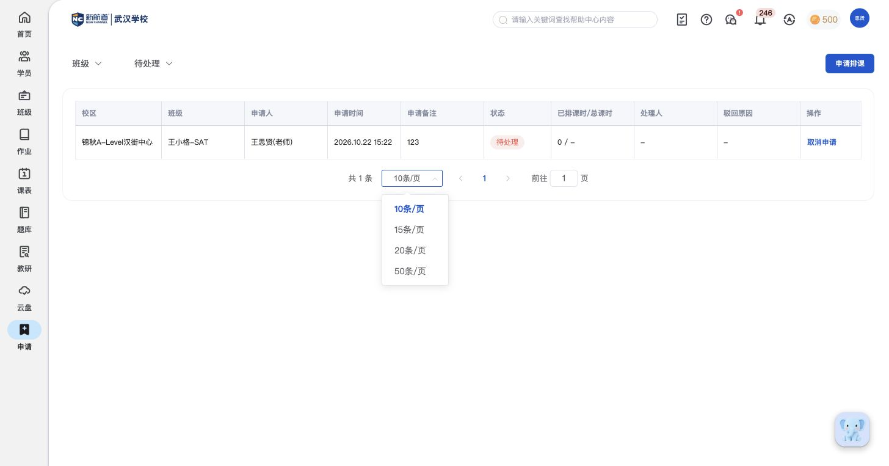

AP01 选择班级并填写排课申请
功能内容：申请排课按钮打开弹窗；表单包含班级下拉与备注；备注提供300字计数；班级候选可见王小格-SAT、测试班002等；提供确定、取消和关闭
实际操作：打开申请排课表单及班级候选后取消。
范围说明：未确定提交，不将按钮点击视为已创建申请；表单没有直接配置课程日期、教师和教室。


调研报告：申请功能结构与清单。本页保留逐次操作和截图，供追溯具体证据。
2026-10-23 · 教师端；按实际页面记录，不以帮助文档补写。
功能内容：申请排课按钮打开弹窗；表单包含班级下拉与备注；备注提供300字计数；班级候选可见王小格-SAT、测试班002等；提供确定、取消和关闭
实际操作：打开申请排课表单及班级候选后取消。
范围说明：未确定提交，不将按钮点击视为已创建申请；表单没有直接配置课程日期、教师和教室。

功能内容：表格显示校区、班级、申请人、申请时间、申请备注；已有样例为王小格-SAT、王思贤(老师)，备注可直接在列表阅读
实际操作：读取已有申请行的基础列。
范围说明：按实际页面记录；未发起或取消申请。

功能内容：列表显示状态和已排课时/总课时；另有处理人、驳回原因列；待处理样例显示0 / -，处理人与驳回原因为空占位
实际操作：查看现有待处理行及表头。
范围说明：已处理和已驳回的筛选项已见，但本账号未展示对应处理详情；不推定处理权限、自动排课或课时计算口径。
功能内容：当前待处理记录的操作列提供取消申请按钮
实际操作：查看按钮位置并保留原记录。
范围说明：未点击取消申请，不补写确认弹窗、可恢复性或处理后能否取消。
功能内容：顶部班级筛选包含关键字输入、全选与班级复选项；加载后可见王小格-SAT候选
实际操作：展开班级筛选，待候选加载后记录。
范围说明：A03为展开初态，A07为已加载画面；主清单采用A07，不把初态暂缺候选写成无数据。

功能内容：状态选项为全部状态、待处理、已处理、已驳回；选择后按钮展示当前状态
实际操作：展开状态菜单，查看待处理结果后恢复全部状态。
范围说明：按实际页面记录；未发起或取消申请。

功能内容：底部显示总条数、上一页、页码、下一页和前往页码输入；每页可选10、15、20、50条
实际操作：展开每页条数选择器并查看分页。
范围说明：当前只有一条样例，分页功能按可见控件记录，不虚构多页结果。
